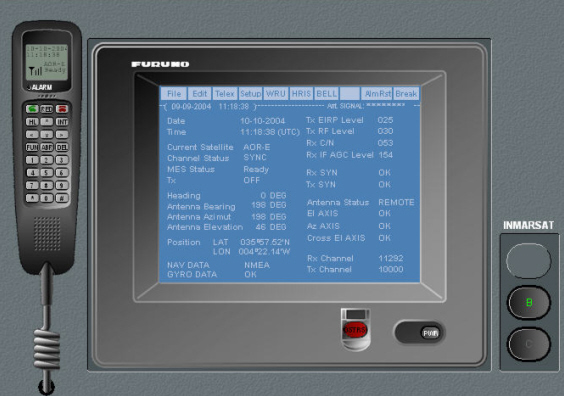

Inmarsat A B
Este panel es un mimético simulado del equipo Furuno FELCOM-82A. Contiene los controles y la mayor parte de la funcionalidad del equipo real. En unidades equipadas también con terminal Inmarsat C, se presenta este panel pulsando el botón A o el B (según tipo de terminal) situados junto al panel Inmarsat.
La funcionalidad del equipo puede consultarse en su Manual de Operador que se adjunta como anexo. No está implementada la funcionalidad correspondiente a la opción Edit ni parte de las funciones incluidas en la opción Setup del menú principal del télex al ser características particulares del equipo que no son imprescindibles para su funcionamiento. Las funciones del teléfono se han reducido a la presentación del estado de la comunicación y a la pantalla de marcado del número con el que se desea comunicar.
